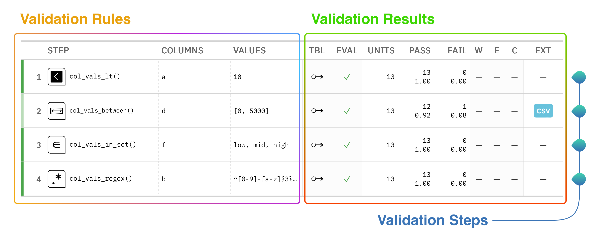

The Pointblank library is all about assessing the state of data quality for a table. You provide the validation rules and the library will dutifully interrogate the data and provide useful reporting. We can use different types of tables like Polars and Pandas DataFrames, Parquet files, or various database tables. Let’s walk through what data validation looks like in Pointblank.
A Simple Validation Table
This is a validation report table that is produced from a validation of a Polars DataFrame:
Each row in this reporting table constitutes a single validation step. Roughly, the left-hand side outlines the validation rules and the right-hand side provides the results of each validation step. While simple in principle, there’s a lot of useful information packed into this validation table.
Here’s a diagram that describes a few of the important parts of the validation table:

There are three things that should be noted here:
validation steps: each step is a separate test on the table, focused on a certain aspect of the table
validation rules: the validation type is provided here along with key constraints
validation results: interrogation results are provided here, with a breakdown of test units (total, passing, and failing), threshold flags, and more
The intent is to provide the key information in one place, and have it be interpretable by data stakeholders.
Example Code, Step-by-Step
Here’s the code that performs the validation on the Polars table.
the Validate(data=) argument takes a DataFrame or database table that you want to validate
the methods starting with col_vals_ specify validation steps that run on specific columns
the interrogate() method executes the validation plan on the table
This common pattern is used in a validation workflow, where Validate and interrogate() bookend a validation plan generated through calling validation methods. And that’s data validation with Pointblank in a nutshell! In the next section we’ll go a bit further by understanding how we can measure data quality with test units and failure thresholds.
Understanding Test Units
Each validation step will execute a type of validation test on the target table. For example, a col_vals_lt() validation step can test that each value in a column is less than a specified number. The key finding that’s reported as a result of this test is the number of test units that pass or fail.
Test units are dependent on the test being run. The collection of col_vals_* validation methods will test each and every value in a particular column, so each value will be a test unit (and the number of test units is the number of rows in the target table). Some validation methods like col_exists() or row_count_match() have only a single test unit since they aren’t testing individual values but rather if the overall test passes or fails.
Using Threshold Levels
Knowing about the numbers of test units across validation methods matters because you have the option to set thresholds (that can signal ‘warning’, ‘error’, and ‘critical’ flags) based on either the relative proportion or absolute number of failing test units.
Here’s a simple example that uses a single validation step along with thresholds set in the thresholds= argument of the validation method.
The code uses thresholds=(2, 4) to set a ‘warning’ threshold of 2 and an error threshold of 4. If you look at the validation report table, we can see:
the FAIL column shows that 2 tests units have failed
the W column (short for ‘warning’) shows a filled gray circle indicating those failing test units reached that threshold value
the E column (short for ‘error’) shows an open yellow circle indicating that the number of failing test units is below that threshold
The one final threshold level, C (for ‘critical’), wasn’t set so it appears on the validation table as a long dash.
Setting thresholds is important since you might want some sort of signal for the discovery of errors in your data. How you set the particular threshold levels is highly dependent on your tolerance for data failures. The idea of thresholds and associated actions is central to how Pointblank works, so, the next two sections in the User Guide will deal with (1) a more in-depth treatment of thresholds, and (2) how to set actions for threshold exceedances.